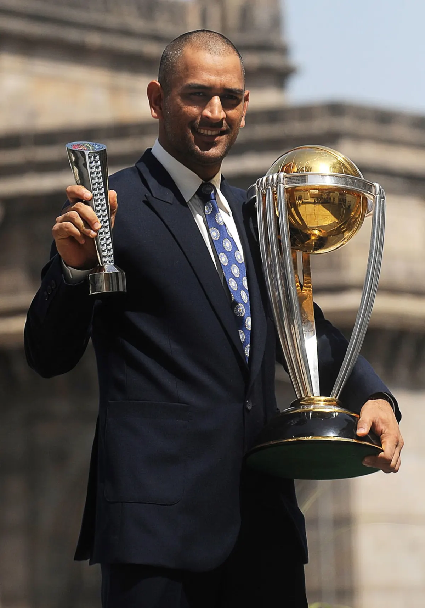

Photo Gallery


Captain Cool | Finisher | Legend
MS Dhoni is a former Indian cricketer and one of the most successful captains in the history of Indian cricket. Known for his calm leadership and finishing skills, Dhoni led India to multiple ICC trophies.
“You don’t play for the crowd, you play for the country.”
“Take action in silence, no lion attacks in noise.”